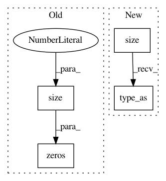

27568a7ebed1a35f08ac0390f35b3de9b8dad0dd,fairseq/models/levenshtein_transformer.py,LevenshteinTransformerModel,initialize_output_tokens,#LevenshteinTransformerModel#Any#Any#,491
Before Change
def initialize_output_tokens(self, encoder_out, src_tokens):
initial_output_tokens = torch.cat(
[
torch.zeros(src_tokens.size(0), 1).fill_(self.bos),
torch.zeros(src_tokens.size(0), 1).fill_(self.eos),
],
1,
After Change
initial_output_tokens[:, 0] = self.bos
initial_output_tokens[:, 1] = self.eos
initial_output_scores = initial_output_tokens.new_zeros(
*initial_output_tokens.size()
).type_as(encoder_out.encoder_out)
return DecoderOut(
output_tokens=initial_output_tokens,
output_scores=initial_output_scores,
attn=None,
In pattern: SUPERPATTERN
Frequency: 3
Non-data size: 4
Instances
Project Name: elbayadm/attn2d
Commit Name: 27568a7ebed1a35f08ac0390f35b3de9b8dad0dd
Time: 2019-11-13
Author: myleott@fb.com
File Name: fairseq/models/levenshtein_transformer.py
Class Name: LevenshteinTransformerModel
Method Name: initialize_output_tokens
Project Name: rusty1s/pytorch_geometric
Commit Name: 455a0dc9a98212089a7201a025670c33a1770f67
Time: 2017-10-23
Author: matthias.fey@tu-dortmund.de
File Name: torch_geometric/nn/functional/spline_gcn.py
Class Name: _EdgewiseSplineGcn
Method Name: backward